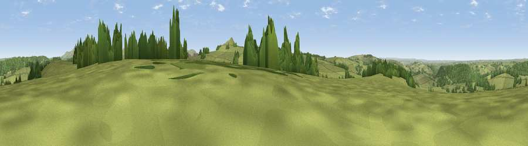

Viewpoint near North Brentor
#16300 in England · top 28% of its area beats it · near North BrentorThe view, rendered

A 360° render of this exact spot computed from the terrain model, tree cover and land cover — summer colours, afternoon light, calibrated against photographs of famous viewpoints. Real trees, hedges and buildings will differ in detail.
The panorama
Grey silhouette: terrain skyline in each direction (720 bearings, Earth curvature and refraction included). Dashed green: skyline with trees (+15 m) and buildings (+8 m) as obstacles. Blue strip: how far the ground is visible on each bearing.
Where the view opens
Wedge length = distance to the farthest visible ground on that bearing (vegetation-aware). Rings at 10, 25 and 50 km.
What fills the view
74% grassland · 22% woodland · 3% cropland ·
Angular shares of the visible panorama (visual magnitude), not map area. Landscape diversity 0.30 (0–1 Shannon).
Key numbers
More beautiful places nearby
The staircase of upgrades: each row has a higher view potential than everything closer. Driving times are estimates from straight-line distance, calibrated against real road routing — check an actual route before setting out.
| Place | Direction | Drive | Score |
|---|---|---|---|
| Brent Tor | SSE · 2 km | ~5 min | 73.4 |
| White Tor | ESE · 9 km | ~17 min | 74.4 |
| Cox Tor | SE · 9 km | ~17 min | 75.9 |
| Great Links Tor | ENE · 10 km | ~19 min | 77.8 |
| Hingston Down | SSW · 12 km | ~22 min | 78.3 |
| Kit Hill | SW · 14 km | ~25 min | 80.3 |
| Viewpoint near Dousland | SE · 15 km | ~27 min | 81.0 |
| Viewpoint near Lee Moor | SSE · 21 km | ~36 min | 82.7 |
50.61766, -4.17223 · source: screening · position refined by local search. Computed location — check access rights before visiting.